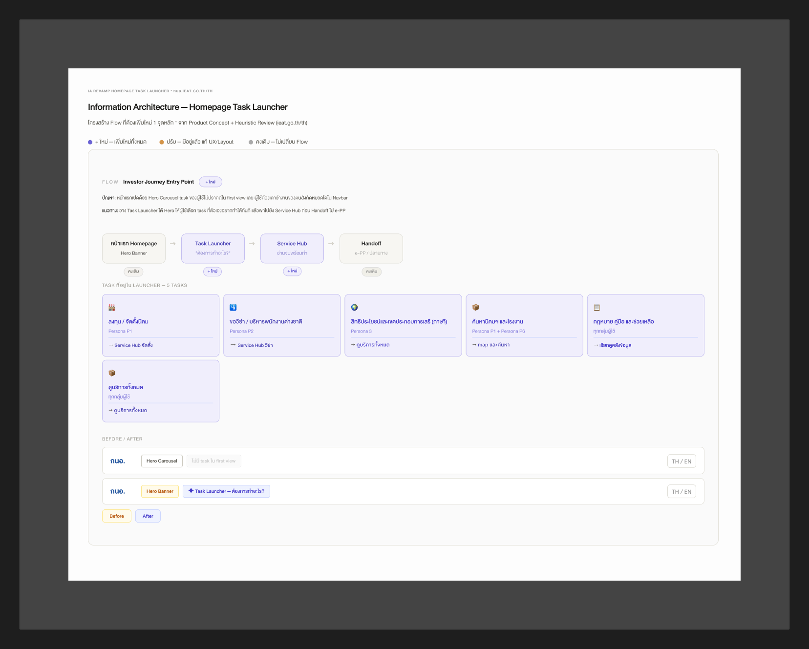
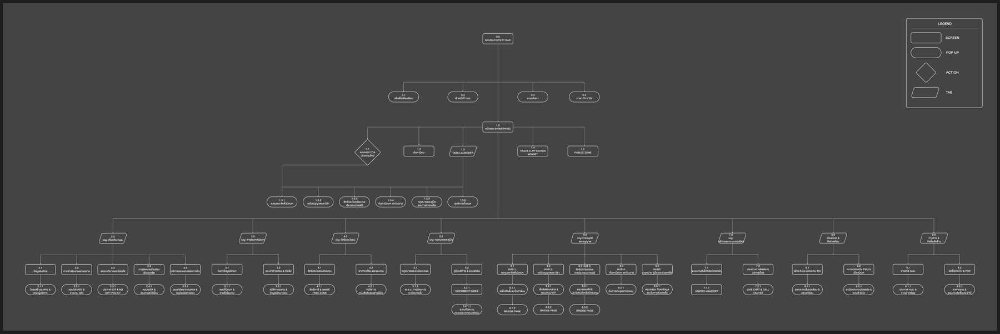
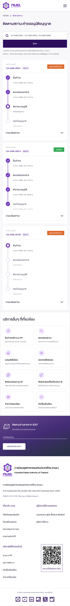

- My role
- UX/UI designer: research synthesis, IA, design goals, hi-fi screens
- Type
- Government web portal + e-PP permit system hand-off
- Timeline
- May 2026 – 2027
Pre-launch - Team
- 2 product designers, development team, IEAT stakeholders
- Tools
- Figma, FigJam, design tokens, GA4 / Hotjar (measurement plan)
The problem
The menu mirrored IEAT's org chart. Users guessed where their task lived, couldn't find the e-PP login, and dropped off at PDF-only service pages.
What I did
Mapped 6 personas and their journeys, rebuilt the IA around tasks, set measurable design goals, and designed the hub-to-e-PP hand-off and key screens on a shared design system.
Where it stands
Not launched yet. Every goal has a baseline from the heuristic review and a target that will be checked with usability tests and analytics.
Before talking to anyone, the site itself told us what was wrong.
A heuristic and technical review of ieat.go.th gave us the baselines we would design against. The problems weren't cosmetic. They were structural.
340+ links, sorted by department
Users had to know IEAT's internal structure to find a service.
e-PP login hidden in a hexagon icon
4–6 clicks and ~45 seconds to find it. Staff bookmarked the direct URL instead.
Services published as PDF images
No steps, fees or timelines on the page. Search and screen readers couldn't read them.
162 images on one page
Headings skipped levels (H5→H2), mobile scrolled sideways at 1698px, and a "Client 01" placeholder was live in production.
Six groups use the same website for completely different reasons.
I built personas from IEAT's core services and real user feedback. Every IA decision later in the project points back to one of them.
Factory HR officer
Files foreign-worker permits weekly and checks status every day.
Every time I open my computer I go to my e-PP bookmark, because I can't find it from the IEAT site.
Accounting / legal officer
Handles tax and import-export privileges, hunting for the exact form name.
I call IEAT before every form, because I don't know what to type into search.
Agency for foreign investors
Runs onboarding for Japanese, Chinese and Korean clients.
The English site is only half there. I end up translating it myself.
SME exploring an estate
Researching benefits before committing. Doesn't know the jargon.
There's so much information and I don't know which part is about me.
Community member
Wants environmental data or a way to file a complaint.
I want to know if the estate near my home really emits smoke, but it's all about investors.
IEAT staff
Already knows the work and only needs the fastest way in.
I use e-PP every day but can't find the login button on the website.

Every journey broke at the same seam: the jump from the portal into e-PP.
I mapped as-is and to-be journeys for all six roles. Different people, different goals, but the same pattern: information lived in long PDFs, the path to the transaction was buried, and the hand-off to e-PP happened with no warning, which made people worry their login wasn't secure.

How might we…
- …let each user start from the task they came to do, not from IEAT's structure?
- …explain a service fully on one page, so people are ready before they hit e-PP?
- …make the hand-off to e-PP feel like one continuous, trustworthy system?
- …let returning users check status without logging in just to look?

From a menu shaped like the org chart to a menu shaped like the work.
I regrouped all six navbar categories using every item from the live site. No group shows more than 8 items, and the rest go behind "See all". I then added the entry points the journeys said were missing.
Task Launcher
Five common tasks right under the hero, replacing a news carousel that pushed every task below the fold.
Service Hubs
"Read it, then do it" pages for investment, permits and tax privileges, with steps, documents, time and fees in HTML.
Unified Handoff Layer
A bridge between the portal and e-PP that knows whether you're logged out, logged in, or already have a request open.
Search with synonyms
Autocomplete with category hints, and plain words mapped to official ones ("visa" → "การตรวจลงตรา").
Public & Transparency Zone
Complaints, environmental data, CSR and jobs, separated from investor menus.
Staff utility entry
A small "IEAT staff" link in the top bar, leading to login, manuals and guidelines.



Before drawing a screen, we agreed on what "better" would mean in numbers.
Each goal ties a problem from the review to a metric, a baseline and a target. The site hasn't launched, so these are targets, not results. They set how the release will be judged.
| Goal | Metric | Baseline | Target | How we'll measure |
|---|---|---|---|---|
| Reach e-PP from the portal in ≤ 2 clicks | Task completion | 42% | ≥ 85% | Usability test, 6 users per role |
| Time to find e-PP | ~45 s | ≤ 10 s | Session recording | |
| Find the right industrial estate | Search success | 28% | ≥ 80% | Search log, task scenarios |
| Zero-result searches | 62% | ≤ 10% | A/B test, synonyms on/off | |
| Service Hub reduces drop-off before applying | Drop-off rate | 78% | ≤ 45% | GA4 funnel exploration |
| CTA click to e-PP | ~8% | ≥ 25% | Event tracking, heatmap | |
| Check status without logging in | Status-check success | 35% | ≥ 90% | Time-on-task recording |
| Time to status | 3–5 min | ≤ 30 s | GA4 widget events | |
| Task-first navigation | Time to service | n/a | −50% | Usability test |
Baselines come from the heuristic review and task walkthroughs on the current site.
Three words set the tone for an authority people need to trust with permits.
Safe enough to drop your guard. You know you're being looked after and won't be taken advantage of.
Nothing in the way. Sharp, clear, and satisfying because you do less and get more.
Forward momentum, like Thai industry itself. Flexible, never stuck.

The calls that shaped the product, and what each one cost.
A bridge page instead of an instant redirect to e-PP
The old button threw users onto another domain with no explanation. The Handoff Layer names the service you picked, says you're leaving ieat.go.th, and adapts to three states: not logged in (log in or register), logged in (SSO, one "Continue in e-PP" button), and open request ("View existing request" or "Start new").
Service pages in HTML, not PDF
Every Service Hub covers steps, documents, time and fees on one page, with a language toggle for foreign investors and the e-PP call to action placed after the explanation, not before.
Tasks above the fold, news below
The hero carousel was mostly press releases and procurement notices. The Task Launcher puts the five most common jobs first and routes into Service Hubs before e-PP.
What we chose not to do yet
Full English content on every page, and a more prominent complaint channel, are mapped in the persona board but not in this release. Both depend on IEAT content owners, so we chose to ship the structure first.
One system for the portal and e-PP, so moving between them stops feeling like changing websites.
Primitive, semantic, spacing and type tokens, plus 25+ components (forms, steppers, document cards, upload, timeline, language switcher) shared by both teams. The visual mismatch between portal and e-PP was one of the reasons users didn't trust the hand-off.

Homepage: start from what you came to do.

Service Hub: understand it fully before you apply.


Status tracker: answers in seconds, not a login.

Document index: every form in one place.

Designing with the people who build it and the people who run it.
I split the screens with a second designer: I owned the homepage, Service Hubs, status tracker, document center and registration, while news, FAQ, payment and complaints were designed in parallel on the same system.
QA with developers caught issues worth designing around, not just fixing:
Accessibility settings didn't persist between pages. We spec'd saving them to localStorage and reading them on page load.
Quick links disappeared in English because the widget rendered per locale. It became a global component.
Not launched yet. Here's how we'll know if it worked.
The redesign hasn't launched yet. After launch the goals above will be checked with moderated usability tests (6 users per role), GA4 funnels, Hotjar heatmaps and an A/B test on synonym search.
What I learned: on a portal this size, the most valuable design work happened before any UI. Getting six personas and their journeys onto one wall made the shared failure point, the e-PP hand-off, obvious to everyone, and turned "redesign the website" into a short list of decisions we could measure.